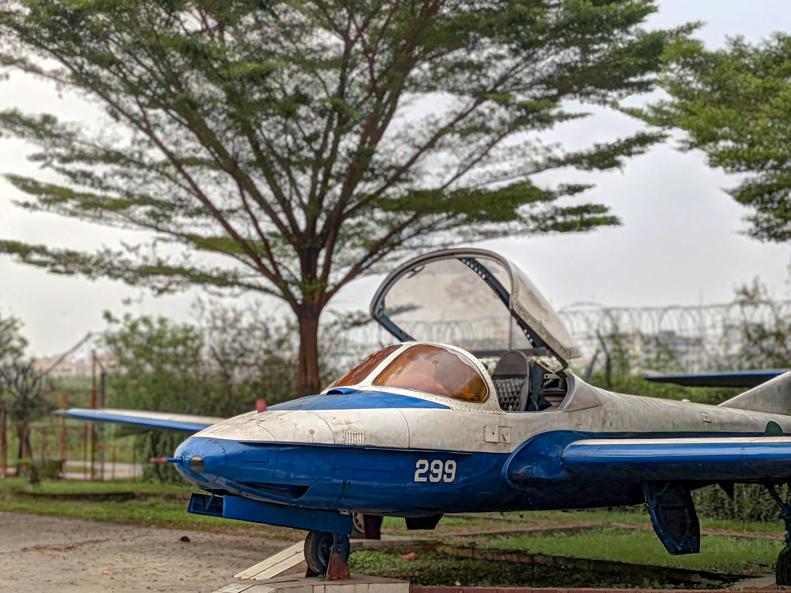

Making travel simple and seamless
Australia

Brazil
Canada
Denmark
Egypt
France
Greece
Japan
A Curated Guide to 8 Premier Global Destinations
Australia
Australia is a land of staggering contrasts and spectacular beauty. The crown jewel of its natural wonders is the Great Barrier Reef, the world’s most extensive coral reef system. Stretching over 2,300 kilometers off the coast of Queensland, it is a kaleidoscope of marine life, offering unparalleled snorkeling and diving experiences among vibrant corals, sea turtles, and countless fish species. Down south, the iconic city of Sydney captivates visitors with the architectural marvel of the Sydney Opera House and the imposing Sydney Harbour Bridge. Beyond the bustling coasts lies the vast, red expanse of the Outback, home to Uluru (Ayers Rock). This massive sandstone monolith is not only a breathtaking geological formation that changes color at sunrise and sunset but also a deeply sacred site for the indigenous Anangu people. Whether you are surfing the pristine waves of Bondi Beach, exploring the ancient Daintree Rainforest, or driving the scenic Great Ocean Road to witness the Twelve Apostles, Australia offers an unforgettable adventure blending unique wildlife, cosmopolitan elegance, and raw wilderness.
Brazil
Brazil is a vibrant symphony of lush landscapes, rhythmic culture, and breathtaking natural wonders. In Rio de Janeiro, the iconic Christ the Redeemer statue stands with open arms atop Mount Corcovado, offering sweeping views of the city, the deep blue Atlantic, and the golden sands of Copacabana and Ipanema beaches. Rio’s energy peaks during Carnival, a world-famous explosion of samba, elaborate costumes, and parade floats. Beyond the cities, the Amazon Rainforest forms the ecological heart of the planet. Navigating the winding Amazon River reveals a staggering biodiversity, from playful pink river dolphins to stealthy jaguars and vibrant macaws. To the south, on the border with Argentina, roars the magnificent Iguazu Falls. This awe-inspiring chain of hundreds of waterfalls plunges over lush cliffs, creating permanent rainbows in the mist. Visitors can explore the historic colonial architecture in Salvador, wander through the sweeping sand dunes and emerald lagoons of Lençóis Maranhenses National Park, or experience the rich wildlife of the Pantanal wetlands. Brazil’s sheer size and passionate culture make it a deeply immersive destination.
Canada
Canada boasts a majestic landscape characterized by towering mountains, pristine lakes, and vast wilderness. The Canadian Rockies are a premier destination, with Banff National Park standing out as a breathtaking alpine wonderland. Here, the incredibly vivid, glacier-fed turquoise waters of Lake Louise and Moraine Lake are framed by jagged, snow-capped peaks, offering world-class hiking in the summer and skiing in the winter. On the eastern side of the country, the awe-inspiring Niagara Falls straddles the border with the United States, drawing millions of visitors to witness the thunderous power of the Horseshoe Falls. Canada's urban centers are equally compelling. Toronto offers a multicultural metropolitan experience highlighted by the soaring CN Tower. Meanwhile, a visit to Quebec City feels like stepping into Europe; its cobbled streets, historic Château Frontenac, and French-speaking culture exude an undeniable Old-World romance. From watching polar bears in Churchill, Manitoba, to driving the spectacular Cabot Trail in Nova Scotia, or exploring the rugged coastline of Vancouver Island, Canada delivers grand, sweeping adventures wrapped in legendary hospitality.
Denmark
Denmark captures the essence of Scandinavian charm, seamlessly blending historic fairy-tale settings with cutting-edge modern design and a deep-rooted culture of "hygge" (coziness). The capital city, Copenhagen, is a delight to explore by bicycle. Its picturesque Nyhavn harbor is lined with brightly colored 17th-century townhouses and historic wooden ships, creating a postcard-perfect scene. Nearby, Tivoli Gardens, one of the world's oldest operating amusement parks, offers magical rides, lush gardens, and enchanting evening illuminations. A short trip from the capital takes you to majestic fortresses like Kronborg Castle, famously known as the setting of Shakespeare’s Hamlet, and the stunning Renaissance-era Frederiksborg Castle, which sits on three islands in a lake. Beyond the cities, Denmark’s landscape features rolling green hills, dramatic white cliffs at Møns Klint, and beautiful, windswept beaches along the jutting peninsula of Jutland. The city of Odense honors its most famous son, author Hans Christian Andersen, bringing his classic fairy tales to life. Denmark is a relatively small but culturally rich nation that proves great things often come in beautifully designed packages.
Egypt
Egypt is a mesmerizing gateway to the ancient world, where monumental ruins stand defiant against the sweeping sands of the Sahara. The undeniable pinnacle of any visit is the Giza Plateau, home to the Great Pyramids and the enigmatic Sphinx. Built as colossal tombs for pharaohs over 4,500 years ago, these structures remain one of the most astonishing architectural feats in human history. The lifeblood of the country is the Nile River. A multi-day cruise down this historic waterway reveals the astonishing scale of antiquity, stopping at Luxor—often called the world’s greatest open-air museum. Here, the awe-inspiring Karnak Temple complex and the intricately painted tombs within the Valley of the Kings, including that of Tutankhamun, leave visitors spellbound. Further south, the monumental rock temples of Abu Simbel, built by Ramses II, showcase ancient engineering prowess. Beyond the pharaonic history, the bustling bazaars of Islamic Cairo offer a sensory overload of spices, textiles, and traditional crafts, while the Red Sea resorts of Sharm El-Sheikh provide world-class scuba diving among pristine coral reefs.
France
France is the world’s most visited country, long romanticized for its exquisite cuisine, elegant architecture, and rich artistic heritage. The journey usually begins in Paris, the "City of Light," where iconic landmarks like the Eiffel Tower, the Gothic grandeur of Notre-Dame Cathedral, and the majestic Arc de Triomphe define the skyline. The Louvre Museum, housed in a former royal palace, holds masterpieces spanning millennia, including the Mona Lisa. Beyond Paris, the Palace of Versailles showcases the opulent, gilded lifestyle of the former French monarchy. Traveling south, the picturesque lavender fields of Provence and the sun-drenched glamor of the French Riviera (Côte d'Azur) beckon travelers to coastal gems like Nice, Cannes, and Saint-Tropez. History buffs are drawn to the solemn beaches of Normandy and the fairy-tale châteaux of the majestic Loire Valley. From skiing in the spectacular French Alps to wine tasting in the legendary vineyards of Bordeaux and Burgundy, France offers a sophisticated, diverse tapestry of experiences that celebrate the fine art of living—the joie de vivre.
Greece
Greece is a sun-baked Mediterranean paradise that serves as the cradle of Western civilization. In the historic capital of Athens, the magnificent Acropolis watches over the sprawling city. Crowned by the Parthenon, this ancient citadel is a stunning monument to classical Greek architecture and philosophy. Beyond the mainland, the true magic of Greece lies scattered across thousands of islands in the Aegean and Ionian seas. Santorini is arguably the most famous, globally recognized for its dazzling white-washed, blue-domed churches clinging to volcanic cliffs that plunge into the deep blue caldera below—a perfect spot for watching legendary sunsets. Nearby, the island of Mykonos offers charming windmills, labyrinthine streets, and vibrant nightlife. History enthusiasts can consult the ancient oracle at the ruins of Delphi, or explore the birthplace of the Olympic Games in Olympia. Whether you are indulging in fresh feta and olives at a seaside taverna, hiking the rugged Samaria Gorge in Crete, or discovering hidden coves, Greece provides a perfect balance of profound historical exploration and idyllic island relaxation.
Japan
Japan offers an exhilarating juxtaposition of deeply preserved ancient traditions and hyper-modern, neon-lit innovation. Tokyo, the sprawling capital, is a sensory masterpiece where peaceful Shinto shrines sit quietly in the shadows of towering skyscrapers, and bustling pedestrian crossings, like Shibuya, pulse with life. A stark contrast to Tokyo is Kyoto, the cultural heart of Japan. Here, visitors can wander through the thousands of vermilion torii gates at Fushimi Inari Shrine, marvel at the shimmering Golden Pavilion (Kinkaku-ji), and stroll through tranquil bamboo groves in Arashiyama. Towering over the landscape is the majestic, snow-capped Mount Fuji, a sacred volcano that has inspired artists and poets for centuries. Traveling between these destinations is a breeze on Japan’s incredibly efficient bullet trains (Shinkansen). Depending on the season, the country undergoes spectacular transformations, from the delicate, fleeting beauty of pink cherry blossoms (sakura) in the spring to the fiery red maple leaves of autumn. From soaking in traditional hot springs (onsen) to savoring authentic sushi, Japan is an endlessly fascinating cultural immersion.